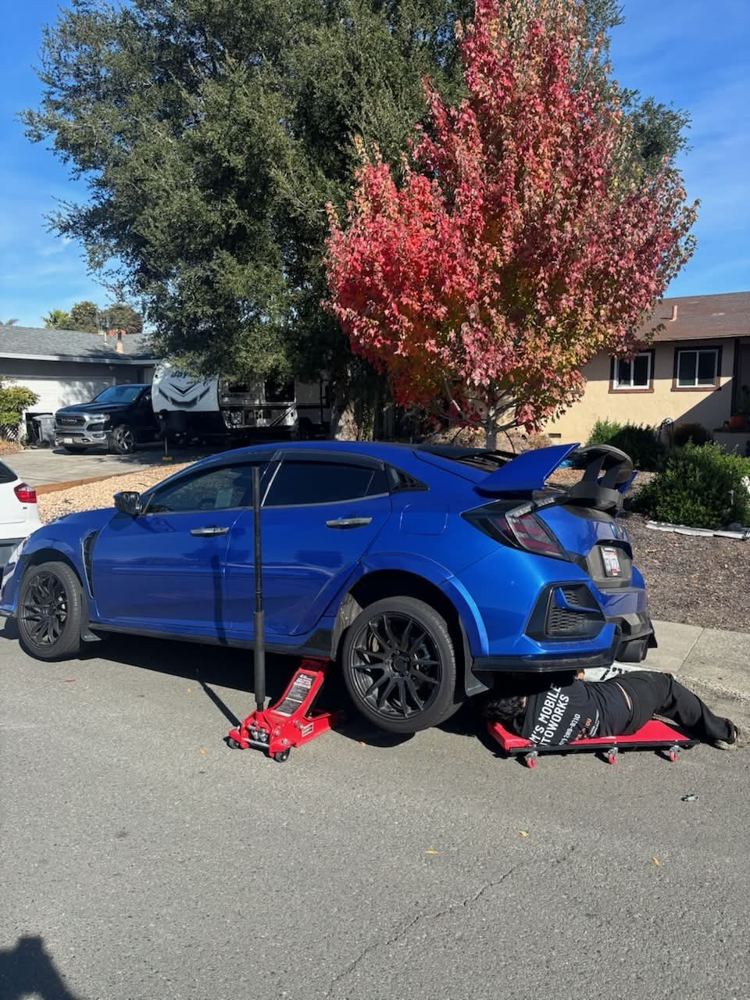
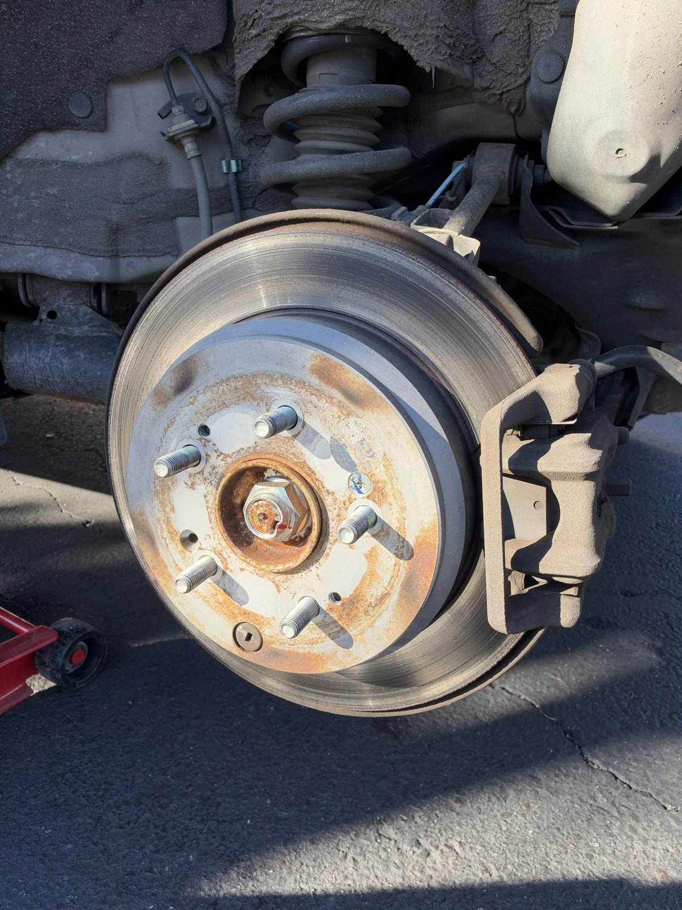
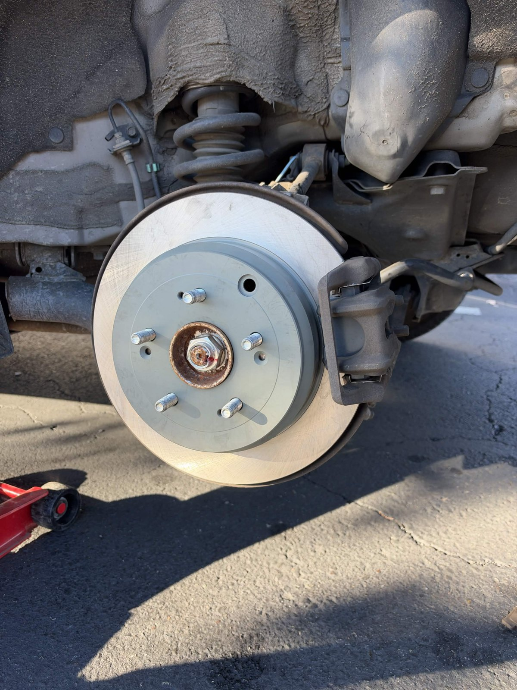

Diagnostics & no-starts ↗
Check engine lights, starting problems and electrical diagnosis.
SANTA ROSA & SONOMA COUNTY
I’m Dom, the owner of Dom’s Mobile AutoWorks in Santa Rosa. I bring mobile diagnostics, brakes and repairs to your home, workplace or vehicle location throughout Sonoma County.
Open daily, 10 AM–7:30 PM. Visits by appointment.

WHAT I CAN HELP WITH
Car won’t start? Brakes making noise?
Call or text with your vehicle and symptoms.
Check engine lights, starting problems and electrical diagnosis.
Brake inspections, pads and rotors, and diagnosis of noise or vibration.
Battery, starter and alternator testing and replacement.
Coolant leaks, overheating, water pumps and thermostats.
Shocks, struts, control arms and other suspension repairs.
Spark plugs, oil changes, routine maintenance and pre-purchase inspections ↗.
Every vehicle and job is different. I’ll confirm the work, pricing and whether it can be done safely on-site before we schedule.

MEET THE OWNER
My name’s Dominic, but most people call me Dom. I’ve been working on cars since I was 14. Cars, motorcycles and motorsports are a big part of my life—when I’m not working, I’m probably working on my own cars.
I started Dom’s Mobile AutoWorks in 2025, helping family and friends. Today I bring that same personal approach to customers throughout Sonoma County.
You’ll talk directly with me about your vehicle, the repair and scheduling.
Find me on YelpA LOOK AT THE WORK
Rear brake rotor replacement on a customer’s Honda. These before-and-after photos show the same vehicle.


Serving Sonoma County, including Rohnert Park, Cotati, Petaluma, Windsor and Sebastopol. Text your location to confirm coverage and availability.
Hours: 10 AM–7:30 PM every day. Visits by appointment. Repairs need a safe, suitable work area and permission from the property owner.
BEFORE YOU BOOK
Many repairs and diagnostic jobs can be done at your home or workplace. Send your vehicle details, symptoms and location so I can confirm access and whether the job is suitable for mobile service.
Call or text (707) 289-8310 with your year, make, model, symptoms and city. I’ll discuss the work and cost with you before we book. A warning light or noise alone doesn’t identify which part needs replacement.
I’m based in Santa Rosa and serve Sonoma County, including Rohnert Park, Cotati, Windsor, Sebastopol and Petaluma. Text your location to confirm travel and appointment availability. Hours are 10 AM–7:30 PM every day.